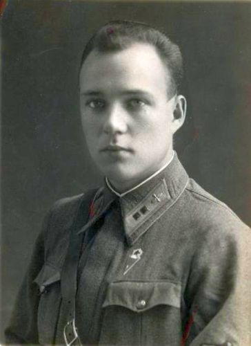

Горьковчане на фронте.
В годы войны из города Горького и Горьковской области в Красную армию было призвано свыше 822 тысяч человек, а с учетом кадровых военных, находившихся в рядах вооруженных сил к лету 41-го — 884 тысячи.
Уже 22 июня 1941 г. в Горьком было организовано 10 пунктов сбора военнообязанных. В первый же день войны военкоматы г. Горького поступило 5 486 заявлений, в области – 10 000.
Формирование воинских частей на территории Горьковской области началось еще до 22 июня 1941 г. По последним данным, в предвоенные и военные годы в Горьком и области было сформировано и отправлено на фронт около 100 стрелковых, танковых, механизированных, авиационных и других частей и соединений: управление 3-й Ударной армии, 2 гвардейских корпуса, 12 стрелковых дивизий, свыше 30 танковых и механизированных бригад, 4 стрелковых бригады, 3 артиллерийских бригады, 2 бригады речных кораблей, десятки отдельных полков и батальонов и многие другие части. Стоит сказать, что после понесенных на фронте потерь воинские части переставали быть «горьковскими» - пополнение в них поступало из различных регионов страны. С другой стороны, наши земляки отправлялись в самые разные части и соединения РККА и сражались на всех фронтах и флотах — от Баренцева до Черного моря.
118-я стрелковая дивизия (II формирования)
Сформирована в 1941 году на территории Шахунского района. В июле 1942 г. выдвинулась подо Ржев и вошла в состав 31-й армии. В начале августа части 118-й сд перешли в наступление. Дивизия вела непрерывные наступательные действия с 4 августа по 12 сентября, освободила 84 населённых пункта. Но участие в «ржевской мясорубке» стоило ей больших потерь. Затем было пять месяцев «боев местного значения» - вплоть до марта 1943 г, когда немцы оставили Ржевско-Вяземский выступ. Преследуя противника, 118-я сд первая на Западном фронте перешла в наступление. В условиях весенней распутицы и бездорожья, дивизия прошла с боями около 180 км, освободив до 160 населённых пунктов, способствовала освобождению Ржева и Сычевки, участвовала в освобождении Дорогобужа. 10 апреля 1943 г. дивизия была преобразована в 85-ю гвардейскую стрелковую дивизию.
В августе 1943 г. 85-я гв сд принимает участие в Смоленской наступательной операции, в ходе которой дивизия прошла с боями 200 км, и освободила более 100 населенных пунктов. В октябре-ноябре 1943 г. 85-я гв сд вела «бои местного значения» на оршанском направлении. Вплоть до лета 1944 г. дивизия сражалась на различных участках фронта в Псковской области. В июне начинается операция по освобождению Прибалтики. 16 июля дивизия первой пересекла границу Латвии. 9 августа 1944 г. 85-я гв сд была награждена Орденом Красного Знамени. В сентябре она принимает участие в Рижской операции, в ходе которой освободила концлагерь Саласпилс и освободила там 1200 советских военнопленных, а также вела бои непосредственно за г. Ригу. 3 ноября 1944 г. дивизии было присвоено наименование «Рижская». После этого, вплоть до конца войны, 85-я гв сд участвовала в блокировании Курляндской группировки противника. С 10 мая дивизия на своем участке вела прием капитулирующих немецких войск.
Горьковчане – Герои Советского Союза
Еще в предвоенные годы звание Героя Советского Союза было присвоено горьковчанам Н.М. Баринову за героизм в боях у озера Хасан, В.А. Амешеву и М.С. Кочетову (обоим посмертно) за подвиги на реке Халхин-Гол. В.А. Новиков, П.А. Семенов и Г.М. Склезнев (последний посмертно) удостоены звания Героев за борьбу против фашизма в Испании. Горьковчане П.П. Борисов, М.И. Быков, Б.А. Корнилов, М.А. Лобасев, Н.В. Машков и И.А. Петрушин (посмертно) были удостоены этого высокого звания за героизм в войне с Финляндией. Всего в предвоенные годы звание Героя Советского Союза получили 27 горьковчан. Среди них также особо хотелось бы выделить прославленного летчика В.П. Чкалова и участники экспедиции на дрейфующей станции «Северный полюс-1» под руководством И.Д. Папанина Е.К. Федорова.
Уже в начале Великой Отечественной войны, 26 июня 1941 года, совершил свой подвиг лейтенант В.М. Балашов: экипаж под командованием капитана А.С. Маслова (в одном бою с капитаном Гастелло) направил горящий бомбардировщик на скопление вражеских войск. За время войны этот подвиг повторили 8 горьковчан. В августе 1941 г. на подступах к г. Ленинграду одним из первых осуществил лобовой таран самолета противника младший лейтенант Александр Березин. Летчик Михаил Шаронов также повторил подвиг Николая Гастелло.

Всей стране стали известны подвиги нижегородцев моряка Евгения Никонова и пехотинца Юрия Смирнова, посмертно награжденных званиями Героя Советского Союза.
7 ноября 1941 года в боях за Севастополь 5 бойцов батальона морской пехоты во главе с горьковчанином политруком Н.Д. Фильченковым вступили в бой с 11 танками противника. В критический момент боя моряки обвязались гранатами и бросились под вражеские танки, уничтожив 10 из них.
Примером массового героизма стал подвиг взвода гвардии лейтенанта П.Н. Широнина, оборонявшего железнодорожный переезд в районе г. Харькова. Пять суток в марте 1943 года 25 гвардейцев сдерживали натиск врага, имевшего 35 танков и бронемашин. Враг не прошел, оставив на поле боя 30 единиц техники и более 100 солдат и офицеров. Все 25 гвардейцев стали Героями Советского Союза, 18 — посмертно, среди них наши земляки - С.Г. Зимин, И.Н. Силаев и А.А. Скворцов.
48 горьковчан стали полными кавалерами ордена Славы. Среди них первыми орден получили Александр Фильчагин, Евгений Аверьянов, Александр Ванюков.
На Курской дуге повторил подвиг Александра Матросова пехотинец Николай Талалушкин.
Беспримерный подвиг совершил горьковчанин гвардии ефрейтор В.А. Митряев. На Курской дуге он, теряя сознание от полученных ран, зажал зубами провода телефонной связи. Ефрейтор Митряев обеспечивал связь под огнем противника при форсировании Днепра, Немана, Вислы, Одера.
Только при форсировании Днепра более 30 горьковчан стали Героями Советского Союза. Два горьковчанина стали дважды Героями Советского Союза: летчики А.В. Ворожейкин и В.Г. Рязанов.
В битве за Берлин артиллерию 1-го Белорусского фронта возглавлял горьковчанин, будущий маршал артиллерии Василий Иванович Казаков.
На Курилах стоит памятник моряку старшине 1-й статьи Н.А. Вилкову. Он был восьмым горьковчанином, повторившим 18 августа 1945 года подвиг Александра Матросова.
В общей сложности бессмертный подвиг экипажа капитана Гастелло повторили восемь горьковчан, семеро летчиков совершили тараны в небе войны, восемь воинов из Горьковской области закрыли своими телами амбразуры вражеских дотов и дзотов. Эти данные не являются окончательными – по мере обнародования новых военных документов всплывают все новые и новые имена наших героических земляков.
Захват города Горького, крупнейшего военно-стратегического и промышленного центра, был одной из целей плана «Барбаросса». По замыслу командования Вермахта, войска 2-й танковой группы Г. Гудериана должны были прорваться через Рязань к Мурому и, переправившись через Оку, взять Арзамас. Захватив этот город, они вышли бы на Горький с южного направления. По данным начальника штаба 771-го стрелкового полка полковника А.В. Шапошникова, в боях под Могилевом разведчики взяли в плен генерала из штаба 24-го моторизованного корпуса 2-й танковой группы Вермахта со штабной картой. На этой карте был проложен маршрут движения корпуса через Тулу с конечной точкой в г. Горьком. Планы немецкого командования в отношении г. Горького находят подтверждение и в «Военном дневнике» начальника штаба фашистских войск Франца Гальдера.